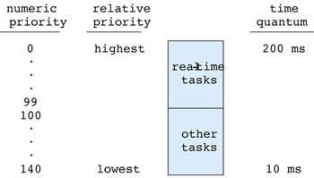

Scheduling
"I know of no way of judging the future but by the past."
— Patrick Henry, 1775
CPU scheduling forms the basis of multi-programmed operating systems.
Process schedulingscheduling
- If a system only runs one program (process), you don't need any scheduling.
- Most computers have the ability to run many different programs, oftentimes, concurrently.
- How the operating system chooses which program to run is key to scheduling.
- The CPU scheduler selects only the processes that are in the ready queue.
- Processes in the waiting queue (blocked) are not eligible to run.
- Not all processes are equal nor do they require the same resources.
- Some processes are more important (higher priority), so they may get special treatment from the scheduler.
- There are many different kinds of scheduling algorithmsscheduling algorithms, some are simple, others, not so simple.
- Some algorithms are based on the process' CPU burst time.
- CPU burst: Time spent on the CPU
- CPU-boundCPU-bound -
The time taken to complete a task is determined primarily by the CPU speed. (Bounded by the CPU, e.g. calculating digits of pi)
- I/O burst: Time spent blocked/waiting for I/O
- I/O-boundI/O-bound -
The time taken to complete a task is determined primarily by the time spent waiting for I/O operations.
(Bounded by I/O, e.g. writing to the disk)
- Two basic scheduling algorithms are non-preemptive (e.g. cooperative)
and preemptivepreemptive.
Scheduling Criteria
Scheduling algorithms have different properties depending on what the algorithm is trying to minimize/maximize.
(e.g. interactive vs. non-interactive processes)
| Criteria | Min/Max | Description |
|---|
| Throughput | Maximize | How many jobs (processes) are completed in a given time. |
| Waiting time | Minimize | How much time a process spends in the ready queue. (Running/blocked doesn't count.) |
| CPU utilization | Maximize | How busy the CPU is. The goal is to keep the CPU working. |
| Response time | Minimize | How long it takes from the time a process is created until it produces some response (output). |
| Turnaround time | Minimize | How much time has elapsed from the time a process is created until it finishes. |
- Used on systems where jobs are executed serially without interruption, such as single-task operating systems.
- This means that the process usually runs to completion
- or it may voluntarily give up the CPU (cooperative scheduling)
- Could be a long time (even hours).
- Two types of scheduling
- First-come, first-serve (FCFS) - jobs are processed in the order they are received.
- Priority scheduling - jobs are sorted according to a prioritization scheme.
- Shortest job first (SJF) - jobs are sorted by (estimated) processing time
FCFS scheduling and waiting time
- Probably the simplest scheduling algorithm to understand and to implement.
- Simple algorithm that uses a FIFOFIFO
queuequeue.
- If the queue is not empty:
- Get a job from the (front of the) queue
- Process the job
- Repeat
- Average waiting time can be large
- Is this meaningful or important? (As always, it depends.)
- FCFS wait time example #1:
- P1 takes 22 ms (milliseconds) to execute (CPU burst time)
- P2 takes 9 ms
- P3 takes 4 ms
- Wait time for P1 is 0 ms
- Wait time for P2 is 22 ms
- Wait time for P3 is 31 ms
- Average wait time: (0 ms + 22 ms + 31 ms)/3 = 53/3 = 17.67 ms
- FCFS wait time example #2:
- Now suppose that the processes arrived in this order:
P2 (9 ms), P3 (4 ms), P1 (22 ms).
- Wait time for P2 is 0 ms
- Wait time for P3 is 9 ms
- Wait time for P1 is 13 ms
- Average wait time: (0 ms + 9 ms + 13 ms)/3 = 22/3 = 7.33 ms
Priority scheduling and waiting time
- A priority queue is a type of generalized queue with two basic queue operations:
- Put - place an item on the queue.
- Get - get the item with highest (or lowest) value item from the queue.
- Same as FCFS scheduling algorithm, except that the queue is replaced by a priority queue.
- Minimizes wait time
- SJF (shortest job first) wait time example:
- P1 takes 22 ms
- P2 takes 9 ms
- P3 takes 4 ms
- Order of jobs: P3, P2, P1
- Wait time for P3: 0 ms
- Wait time for P2: 4 ms
- Wait time for P1: 13 ms
- Average wait time: (0 ms + 4 ms + 13 ms)/3 = 17/3 = 5.67 ms
- SJF is optimal in that it minimizes the average wait time for a set of processes.
- SJF can be complicated by the fact that the scheduler needs to know how long a process will take to complete.
- SJF algorithms approximate how much CPU burst time a process will require by averaging previous times spent running.
Priority scheduling problem
- May cause process starvation: A low priority job may sit on the queue indefinitely.
- This happens if there is always an incoming job request with a higher priority than the lowest priority job on the queue.
- A possible solution is aging: If a job has waited on the queue for a sufficiently long time, its priority is increased by a set amount.
- For example, increase the priorities of all processes in the ready queue by 1 every N milliseconds (where N can be any positive number and larger priorities have more priority).
Example priority values
- Windows Scheduling Priorities Process priority class across the top,
thread priority level along the left.
- Zero is the lowest priority (only zero-page thread), 31 is the highest.
- Priority class is for the process. (SetPriorityClass)
- Priority level is for the threads of the process. (SetThreadPriority)
- Threads with the same priority use a round-robin scheme to take turns running.
- Processes may get a priority boost (Priority Boosts) when switching from background to foreground
or when keyboard input has occurred.
|
| Operating System Concepts - 8th Edition Silberschatz, Galvin, Gagne ©2009 |
Example priority queue:
- Each job/task is allowed a time slice, or time quantum, in which to execute.
- Most time quantum are between 5 ms and 200 ms.
- A modern CPU (core) can execute millions of instructions in a few milliseconds.
- Once a time quantum has passed, or if the job has finished within that time, a different job gets a time slice.
- A scheduling algorithm is used to determine the order in which jobs get a time slice.
Round robin scheduling
- Uses a FIFO queue to process jobs in a first-come first-serve order.
- Get a job from the front of the queue
- Let it execute for a maximum of one time quantum
- If it does not complete within that time
- Pause the job, and put the job at the back of the queue
- Repeat
- RR wait time example #1:
- In queue: P1 (22 ms), P2 (9 ms), P3 (4 ms)
- Assume a time quantum of 5 ms
- P1 executes for 5 ms (17 ms remaining)
- P2 executes for 5 ms (4 ms remaining)
- P3 executes for 4 ms (done )
- P1 executes for 5 ms (12 ms remaining)
- P2 executes for 4 ms (done)
- P1 executes for 5 ms (7 ms remaining)
- P1 executes for 5 ms (2 ms remaining)
- P1 executes for 2 ms (done)
- P1 waits a total of: 5 + 4 + 4 = 13 ms
- P2 waits a total of: 5 + 4 + 5 = 14 ms
- P3 waits a total of: 5 + 5 = 10 ms
- Average waiting time: (13 ms + 14 ms + 10 ms)/3 = 37/3 = 12.33 ms
- Note that if no other process is waiting to be run, the currently running process
is not removed from the CPU.
- In this example, the total time was the same as the non-preemptive. However,
this example may give the illusion that all 3 processes are running at the
same time, even on a single-core CPU.
- RR wait time example #2:
- In queue: P1 (22 ms), P2 (9 ms), P3 (4 ms)
- Now assume a time quantum of 10 ms
- P1 executes for 10 ms (12 ms remaining)
- P2 executes for 9 ms (done)
- P3 executes for 4 ms (done)
- P1 executes for 10 ms (2 ms remaining)
- P1 executes for 2 ms (done)
- P1 waits a total of: 9 + 4 = 13 ms
- P2 waits a total of: 10 ms
- P3 waits a total of: 10 + 9 = 19 ms
- Average waiting time: (13 ms + 10 ms + 19 ms)/3 = 42/3 = 14 ms
- RR considerations:
- The average waiting time decreases (in general) with decreasing time quantum size.
- Conversely, waiting time increases as the time quantum increases.
- A very large time quantum (infinity) makes RR the same as FCFS.
- A very small time quantum (approaching 0) is called
processor sharingprocessor sharing
- Note that these examples do not consider the context switching time
- Context switching causes more processing time.
- A balance must be made between time quantum size and context switching time.
- We want the time quantum to be "large" with respect to the context switching time.
- Most modern systems have:
- time quanta ranging from 10 to 100 milliseconds (1 millisecond = 1/1,000 of a second).
- context switching time less than 10 microseconds (1 microsecond = 1/1,000,000 of a second).
Preemptive SJF scheduling
- It is possible to modify the non-preemptive SJF algorithm (from above) to be preemptive. (Kind of like a dynamic SJF.)
- Instead of using a time quantum like other preemptive scheduling algorithms, it simply checks the CPU burst values of
the newly arriving processes in the ready queue.
- Same as SJF above except that if a new process arrives in the ready queue that has a lower burst time than the currently
running process, the current process is taken off the CPU and the ready process is given the CPU.
- Preemptive SJF (shortest job first) wait time example:
- P1 arrives at time 0 requires 7 ms
- P2 arrives at time 2 requires 4 ms (P1 is put back into the queue with 5 ms remaining.)
- P3 arrives at time 4 requires 1 ms (P2 is put back into the queue with 2 ms remaining.)
- P4 arrives at time 5 requires 4 ms. The queue:
- P2 - 2 ms
- P4 - 4 ms
- P1 - 5 ms
- Wait time for P1: 9 ms
- Wait time for P2: 1 ms
- Wait time for P3: 0 ms
- Wait time for P4: 2 ms
- Average wait time: (9 ms + 1 ms + 0 ms + 2 ms)/4 = 12/4 = 3 ms
- Like non-preemptive SJF, preemptive SJF still needs to know how much time a process requires.
- The scheduler keeps track of previous execution times and uses this to predict how long the next CPU burst will likely be.
- If the process/thread does no I/O, it will not voluntarily give up the CPU.
- If the process/thread does a lot of I/O, it will often give up the CPU using only a small portion of it's allotted time slice.
- Still suffers from starvation because shorter jobs can keep showing up preventing longer jobs from running.
- Preemptive SJF is also called shortest-remaining-time-first.
Multilevel queue scheduling
- Jobs are put on different queues according to prioritization criteria. (like this)
- System jobs might have top priority.
- User jobs might have less priority.
- Background jobs might have least priority.
- Sometimes the jobs are just divided between foreground processes and background processes.
- To affect processor scheduling:
- On Win XP, Right click: My Computer, choose Properties | Advanced | Settings for Performance | Advanced
- On Win 7, Click start button, choose Computer | System properties | Advanced system settings | Advanced | Settings for Performance | Advanced
- On Win 10, Click start button, choose Control Panel | System | Advanced system settings | Advanced | Settings for Performance | Advanced
- Processes (threads) are assigned to a queue and they never change queues. (static priorities)
- Each queue may be given a different percent of the CPU time: the higher priority job queue gets the most, the lower priority job queue get the least,
e.g. system 60%, user 30%, background 10%.
- Each queue may use a different scheduling algorithm (e.g. RR or SJF).
Multilevel feedback queue scheduling
- Uses multiple queues, as in multilevel queue scheduling.
- However, a job may be moved between each of the different level queues, depending on CPU usage. (dynamic priorities)
- If a job voluntarily yields, it is put on a blocked queue, and when it's time to run again, it stays at the same priority.
- It's possible that the scheduler may "reward" a voluntary yield by increasing the job's time slice next time. (It still has the same priority.)
- If a job is forced to yield (CPU-bound), it is moved to a lower priority queue.
- Also, if a job is blocked on I/O, it may be promoted to a higher priority queue.
- Another way to say it: If a job has long CPU burst cycles, it is put on a lower priority queue. (Its priority is lowered.)
- Conversely, if a job has long I/O burst, it can be moved to a higher priority queue. (Its priority is raised.)
- What this means is that short jobs will get higher priority, and will run to completion (much like how SJF, shortest-job-first works).
- Favors short jobs and I/O bound jobs.
- A CPU-bound process at the lowest level will stay there until it completes.
- Implementation-wise, this is the most complex algorithm to implement.
- It is used by most modern operating systems, including Windows NT, Mac OS X (macOS), Solaris, BSD, and older Linux kernels (before 2004).
- Windows Vista introduced
CPU cycle counting as a more fair method of scheduling.
Completely fair scheduling (CFS)
- Used by newer Linux kernels (2.6.23 or newer, circa October 2007).
- Before that, the O(1)
scheduler was used.
- Based on the fair-share schedulerfair-share scheduler (that uses user-level or group-level scheduling).
- Groups of processes (rather than a single process) are given a time slice to share.
- e.g. grouped by user/owner of the processes.
- 2 users - user A has 1 process user B has 10 processes.
- User A's process gets 50% of the CPU, user B's processes each get 5%.
- Like multilevel feedback queue scheduling, gives higher priority to blocked/sleeping tasks.
- Sounds a little counter-intuitive, but it makes sense.
- Process groups can be made to share time, e.g.
If a process forks 10 children, instead of each child getting, say, 20 ms, the "group" shares
the 20 ms.
- Technical detail: CFS uses a red-black tree instead of run queues.
OS nerds (like myself) can read about it here.
- To see all of the gory details of what the schedule keeps track of, look at
the /proc/PID/sched file. Replace PID with the actual process ID you want
to look at. For example,
cat /proc/12345/sched
will show lots of details.
Why so many?
- Depends on the type of work:
- Batch - e.g. maximize throughput
- Interactive - e.g. minimize response time
- Real time - e.g. minimize wait time
- Different computing systems:
- Desktops
- Servers
- Embedded devices
- Mainframes
- Supercomputers
- There really isn't a one-size-fits-all scheduler.
Links: ksysguard, gnome-system-monitor
Up until now, everything that was discussed ignored the concept of multiple CPUs or cores. With
multicore processors, we can now achieve true parallelism.
Real World examples:
In my opinion, the most approachable introduction and explanation of scheduling
is a book called
P.S. To Operating Systems. The explanations use ordinary daily activities to
describe different scheduling approaches (e.g. fast-food restaurant, video rental).
Be warned that some of the math gets pretty involved and tedious. However, you don't
need to understand all of the math to get the ideas.
It covers single core, multiple core, processor scheduling, disk scheduling, process synchronization,
and memory management. Well worth the read for those that want to understand how the OS works
behind the scenes.
The first system uses a sno-cone stand to model how much profit is made.
(Employees are CPUs, customers are jobs, the line of customers is the ready queue.)
Example:
- Employee A costs $12 per hour (20 cents per minute) and can service 3 customers per minute.
- Employee B costs $6 per hour (10 cents per minute) and can service 2 customers per minute.
- This means that employee A costs twice (100% more) as much as employee B, but only
services 50% more people.
- Which employee will make the most profit? (i.e. get the most work done)
- This will depend on many factors (e.g. how much does a sno-cone cost, how many customers want a sno-cone.)
- What happens if customers arrive one-per-minute?
- What about 3 per minute?
- Is there additional overhead (context switching) to service a customer?
The sno-cone model describes how a single-core CPU works in regards to efficiency.
After a somewhat detailed statistical analysis it can be shown that Employee A
will make $2.73 per minute profit, while Employee B will make $2.70 per minute profit.
Chapter1-sample.pdf
Consider how customers get serviced at the local Enormo-Burger™.
- One-at-a-time system - One line, one person does everything. (Reference system)
- Twice-as-fast system - One line, two people attend to one customer.
- Sequential system - Two lines (sequential), one worker taking orders, one working filling the order.
- Random line system - Two lines, when a customer arrives he chooses a random line where one worker does everything.
- Shortest line system - Two lines, when a customer arrives, he goes to the shortest line where one worker does everything.
- Common line system - One line, two workers, the next customer goes to the available worker who does everything.
All of the methods can have different times associated with throughput, waiting time, and utilization.
- Maximizing throughput means making more money.
- Minimizing initial wait time (response time) means (maybe) happier customers, which may mean repeat business.
- Minimizing overall wait time means (maybe) happier customers, which may mean repeat business.
- Maximizing utilization means that workers aren't standing idle (and getting paid).
In operating systems, this models a computer with two CPUs or two cores.
Again, after detailed statistical analysis, the results:
For throughput (how many customers get served per time unit), this is how they fare (larger number is better)
Twice as fast - 0.466
Sequential - 0.423
Random line - 0.423
Shortest line - 0.450
Common line - 0.454
For wait time, (smaller is better)
Twice as fast - 0.571
Sequential - 0.909
Random line - 0.909
Shortest line - 0.333
Common line - 0.202
- Faster processors, or processors with more cores generally cost more.
- It is not uncommon for one processor, A, to be only 30% faster than
another processor, B, yet cost 100% more.
- This is yet another trade-off that one must make when deciding how much
"computing power" to purchase.
- In other words, is it really cost-effective to pay for processor A
over processor B. The answer is, as usual, it depends (on the workload).
sample2.pdf
Other things to take into consideration:
- Reliability or fault tolerance - What if the cash register breaks?
- If there is only one cash register (resource, CPU core), the whole place shuts down.
- With multiple cash registers (resources, CPU cores), progress is still made, albeit, more slowly.
- Job specialization - Costs to gain multiple skills?
- May need to train each person for two types of jobs.
- Better for redundancy (someone gets sick).
- Specialization is cheaper. (CPUs used to be this way.)
- If customers see long lines, they may go elsewhere
- This may limit the maximum amount of income.
Applications to scheduling:
- Asymmetric multiprocessing
- One CPU/core handles all I/O, scheduling, and system activities (OS).
- Other CPUs/cores run user-level programs.
- Some CPUs/cores may be specific to a program.
- Symmetric multiprocessing (SMP)
- Each CPU/core is treated the same. Most systems implement SMP.
- The ready queue may be shared by all cores or they may each have their own queue.
- If each core has its own ready queue, can jobs in the queue move to another?
- Processor affinity - The ability to specify on which CPU/core a thread will execute. Two types: soft and hard.
- Soft - The OS will try to keep processes (threads) on the same core, but can't guarantee it.
- Hard - The OS guarantees that all processes/threads will always use the same core(s).
- If another CPU/core is available, the thread will still wait until the specific CPU/core becomes available.
- Moving (migrating) a thread between cores can cause a negative performance hit due to cache issues.
- This will depend on whether or not the cores all share a common cache or if they each have their own private cache.
(This has other problems associated with cache coherencycache coherency.)
- Maintaining cache coherency is done by snooping (cache invalidating, watches address lines only) and snarfing (cache updating, watches address and data lines).
- Write-through (synchronous) vs. write-back (asynchronous, lazy update)
- However, sometimes the ability to run the thread outweighs the fact that there will be cache misses.
- Most systems avoid migrating threads between cores, but sometimes they still do.
- Load balancing - The ability to keep all cores busy.
- Not needed if there is one shared ready queue for all cores.
- If each core has its own ready queue, load balancing will redistribute the processes to the idle core's queue.
- Two approches to load balancing:
- Push migration - A special process periodically checks the load on each core and if a core is idle, pushes processes
from a busy core's queue into the idle core's queue.
- Pull migration - When a core is idle, it pulls a process from another core's ready queue.
- Load balancing may interfere with processor affinity.
- Some systems, such as Linux, assign a larger time quantum to processes with higher priorties.
|  |
| Operating System Concepts - 8th Edition Silberschatz, Galvin, Gagne ©2009 |
- ComparisonComparison of different operating systems
and the scheduling algorithm used by each OS.
-
In-depth measurements of schedulers and synchronization primitives on Linux and Windows.
- To tweak the schedulers, look at the sched* files in /proc/sys/kernel/